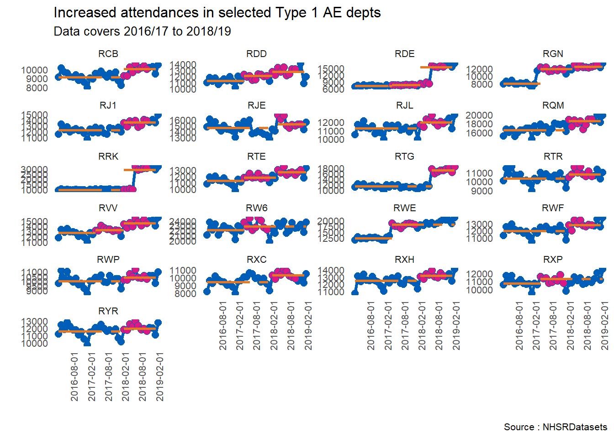

library(NHSRdatasets)
library(runcharter) # remotes::install_github("johnmackintosh/runcharter")
library(dplyr)
library(skimr)Background
The {NHSRdatasets} package made it to CRAN recently, and as it is designed for use by NHS data analysts, and I am an NHS data analyst, let’s take a look at it. Thanks to Chris Mainey and Tom Jemmett for getting this together.
Load packages and data
As above let’s load what we need for this session. The {runcharter} package is built using {data.table}, but I’m using {dplyr} in this main section to show that you don’t need to know {data.table} to use it.
TipInstalling from GitHub
Some packages, like {runcharter} are not on CRAN and can be installed using another package, in this case {remotes} also needs to be installed.
However- seriously, do take a look at {data.table}. It’s not as hard to understand as some might have you believe. A little bit of effort pays off. You can load the {runcharter} package from github using the {remotes} package. (I’ve managed to install it on Windows and Ubuntu. Mac OS? No idea, I have no experience of that).
That felt a bit glitchy. There has to be a sleeker way to load and assign a built in dataset but I couldn’t find one. Cursory google to Stackoverflow.
Let’s have a look at the data:
glimpse(ae)Rows: 12,765
Columns: 6
$ period <date> 2017-03-01, 2017-03-01, 2017-03-01, 2017-03-01, 2017-03-0…
$ org_code <fct> RF4, RF4, RF4, R1H, R1H, R1H, AD913, RYX, RQM, RQM, RJ6, R…
$ type <fct> 1, 2, other, 1, 2, other, other, other, 1, other, 1, other…
$ attendances <dbl> 21289, 813, 2850, 30210, 807, 11352, 4381, 19562, 17414, 7…
$ breaches <dbl> 2879, 22, 6, 5902, 11, 136, 2, 258, 2030, 86, 1322, 140, 0…
$ admissions <dbl> 5060, 0, 0, 6943, 0, 0, 0, 0, 3597, 0, 2202, 0, 0, 0, 3360…Lot’s of factors. I’m actually very grateful for this package, as it caused me major issues when I first tried to plot this data using an earlier version of {runcharter.} I hadn’t considered factors as a possible grouping variable, which was a pretty big miss, as all the facets were out of order. All sorted now.
There’s way too much data for my tiny laptop screen, so I will filter the data for type 1 departments – the package help gives us a great link to explain what this means
type1 <- ae %>%
filter(type == 1) %>%
arrange(period)
# plot attendances
p <- runcharter(type1,
med_rows = 13, # median of first 13 points
runlength = 9, # find a run of 9 consecutive points
direction = "above", # find run above the original median
datecol = period,
grpvar = org_code,
yval = attendances
)The runcharter function returns both a plot, and a data.table/ data.frame showing a summary of any runs in the desired direction (I’m assuming folk reading this have a passing knowledge of run charts, but if not, you can look at the package vignette, which is the cause of most of my commits!!)
Don’t try loading the plot right now, because it is huge, and takes ages. If we look at the summary dataframe, we can see 210 rows, a fairly decent portion of which relate to significant increases above the original median value
p$sustained org_code median start_date end_date extend_to run_type
<ord> <num> <Date> <Date> <Date> <char>
1: R0A 21430 2017-10-01 2018-10-01 2019-03-01 baseline
2: R1F 3477 2016-04-01 2017-04-01 2017-05-01 baseline
3: R1H 28843 2016-04-01 2017-04-01 2019-03-01 baseline
4: R1K 11733 2016-04-01 2017-04-01 2019-03-01 baseline
5: RA2 5854 2016-04-01 2017-04-01 2018-03-01 baseline
---
206: RGN 12473 2018-05-01 2019-01-01 2019-03-01 sustained
207: RLT 6977 2018-03-01 2018-11-01 2019-03-01 sustained
208: RQ8 8456 2018-03-01 2018-11-01 2019-03-01 sustained
209: RTE 12610 2018-05-01 2019-01-01 2019-03-01 sustained
210: RVV 14582 2018-03-01 2018-11-01 2019-03-01 sustainedLet’s use {skimr} to get a sense of this
skimr::skim(p$sustained)| Name | p$sustained |
| Number of rows | 210 |
| Number of columns | 6 |
| Key | NULL |
| _______________________ | |
| Column type frequency: | |
| character | 1 |
| Date | 3 |
| factor | 1 |
| numeric | 1 |
| ________________________ | |
| Group variables | None |
Variable type: character
| skim_variable | n_missing | complete_rate | min | max | empty | n_unique | whitespace |
|---|---|---|---|---|---|---|---|
| run_type | 0 | 1 | 8 | 9 | 0 | 2 | 0 |
Variable type: Date
| skim_variable | n_missing | complete_rate | min | max | median | n_unique |
|---|---|---|---|---|---|---|
| start_date | 0 | 1 | 2016-04-01 | 2018-07-01 | 2016-04-01 | 9 |
| end_date | 0 | 1 | 2017-04-01 | 2019-03-01 | 2017-04-01 | 9 |
| extend_to | 0 | 1 | 2017-05-01 | 2019-03-01 | 2019-03-01 | 7 |
Variable type: factor
| skim_variable | n_missing | complete_rate | ordered | n_unique | top_counts |
|---|---|---|---|---|---|
| org_code | 0 | 1 | TRUE | 139 | RA4: 3, RDD: 3, RDE: 3, RGN: 3 |
Variable type: numeric
| skim_variable | n_missing | complete_rate | mean | sd | p0 | p25 | p50 | p75 | p100 | hist |
|---|---|---|---|---|---|---|---|---|---|---|
| median | 0 | 1 | 9389.8 | 4317.54 | 3477 | 6468.25 | 8413 | 11311.25 | 29102 | ▇▅▁▁▁ |
To keep this manageable, I’m going to filter out for areas that have median admissions > 10000 (based on the first 13 data points)
high_admits <- p$sustained %>%
filter(median > 10000 & run_type == "sustained") %>%
select(org_code)Then I change the org_code from factor to character, and pull out unique values. I’m sure there is a slicker way of doing this, but it’s getting late, and I don’t get paid for this..
I use the result to create a smaller data frame
high_admits$org_code <- as.character(high_admits$org_code)
type1_high <- type1 %>%
filter(org_code %in% high_admits$org_code)And now I can produce a plot that fits on screen. I’ve made the individual scales free along the y axis, and added titles and so on
p2 <- runcharter(type1_high,
med_rows = 13, # median of first 13 points as before
runlength = 9, # find a run of 9 consecutive points
direction = "above",
datecol = period,
grpvar = org_code,
yval = attendances,
facet_scales = "free_y",
facet_cols = 4,
chart_title = "Increased attendances in selected Type 1 AE depts",
chart_subtitle = "Data covers 2016/17 to 2018/19",
chart_caption = "Source : NHSRDatasets",
chart_breaks = "6 months"
)Let’s look at the sustained dataframe
p2$sustained org_code median start_date end_date extend_to run_type
<ord> <num> <Date> <Date> <Date> <char>
1: RCB 9121 2016-04-01 2017-04-01 2018-03-01 baseline
2: RDD 11249 2016-04-01 2017-04-01 2017-05-01 baseline
3: RDE 7234 2016-04-01 2017-04-01 2017-05-01 baseline
4: RGN 7912 2016-04-01 2017-04-01 2017-05-01 baseline
5: RJ1 12240 2016-04-01 2017-04-01 2018-03-01 baseline
6: RJE 14568 2016-04-01 2017-04-01 2018-05-01 baseline
7: RJL 11262 2016-04-01 2017-04-01 2018-03-01 baseline
8: RQM 16478 2016-04-01 2017-04-01 2018-03-01 baseline
9: RRK 9584 2016-04-01 2017-04-01 2018-03-01 baseline
10: RTE 11303 2016-04-01 2017-04-01 2017-05-01 baseline
11: RTG 11344 2016-04-01 2017-04-01 2018-07-01 baseline
12: RTR 10362 2016-04-01 2017-04-01 2018-03-01 baseline
13: RVV 12700 2016-04-01 2017-04-01 2017-05-01 baseline
14: RW6 22114 2016-04-01 2017-04-01 2017-05-01 baseline
15: RWE 12275 2016-04-01 2017-04-01 2017-05-01 baseline
16: RWF 11939 2016-04-01 2017-04-01 2018-03-01 baseline
17: RWP 9976 2016-04-01 2017-04-01 2018-03-01 baseline
18: RXC 9396 2016-04-01 2017-04-01 2018-03-01 baseline
19: RXH 12494 2016-04-01 2017-04-01 2018-03-01 baseline
20: RXP 10727 2016-04-01 2017-04-01 2017-05-01 baseline
21: RYR 11578 2016-04-01 2017-04-01 2018-03-01 baseline
22: RCB 10062 2018-03-01 2018-11-01 2019-03-01 sustained
23: RDD 12093 2017-05-01 2018-01-01 2018-03-01 sustained
24: RDE 7637 2017-05-01 2018-01-01 2018-03-01 sustained
25: RGN 11896 2017-05-01 2018-01-01 2018-05-01 sustained
26: RJ1 13570 2018-03-01 2018-11-01 2019-03-01 sustained
27: RJE 15183 2018-05-01 2019-01-01 2019-03-01 sustained
28: RJL 11972 2018-03-01 2018-11-01 2019-03-01 sustained
29: RQM 18560 2018-03-01 2018-11-01 2019-03-01 sustained
30: RRK 29102 2018-03-01 2018-11-01 2019-03-01 sustained
31: RTE 11772 2017-05-01 2018-01-01 2018-05-01 sustained
32: RTG 17169 2018-07-01 2019-03-01 2019-03-01 sustained
33: RTR 10832 2018-03-01 2018-11-01 2019-03-01 sustained
34: RVV 13295 2017-05-01 2018-01-01 2018-03-01 sustained
35: RW6 22845 2017-05-01 2018-01-01 2019-03-01 sustained
36: RWE 18173 2017-05-01 2018-01-01 2019-03-01 sustained
37: RWF 12793 2018-03-01 2018-11-01 2019-03-01 sustained
38: RWP 10358 2018-03-01 2018-11-01 2019-03-01 sustained
39: RXC 10279 2018-03-01 2018-11-01 2019-03-01 sustained
40: RXH 13158 2018-03-01 2018-11-01 2019-03-01 sustained
41: RXP 11314 2017-05-01 2018-01-01 2019-03-01 sustained
42: RYR 11970 2018-03-01 2018-11-01 2019-03-01 sustained
43: RDD 12776 2018-03-01 2018-11-01 2019-03-01 sustained
44: RDE 15322 2018-03-01 2018-11-01 2019-03-01 sustained
45: RGN 12473 2018-05-01 2019-01-01 2019-03-01 sustained
46: RTE 12610 2018-05-01 2019-01-01 2019-03-01 sustained
47: RVV 14582 2018-03-01 2018-11-01 2019-03-01 sustained
org_code median start_date end_date extend_to run_typeAnd of course, the plot itself
p2$runchart
I haven’t looked into the actual data too much, but there are some interesting little facets here – what’s the story with RDE, RRK and RTG for example? I don’t know which Trusts these codes represent, but they show a marked increase. Of course, generally, all areas show an increase at some point.
The RGN (top right) and RVV (mid left) show the reason why I worked on this package – we can see that there has been more than one run above the median. . Performing this analysis in Excel is not much fun after a while.
There is a lot more I can look at with this package, and we in the NHS-R community are always happy to receive more datasets for inclusion, so please contribute if you can.
This post was originally published on johnmackintosh.net but has kindly been re-posted to the NHS-R community blog.
It has also been formatted to remove Latin Abbreviations, edited for NHS-R Style and to ensure running of code in Quarto.